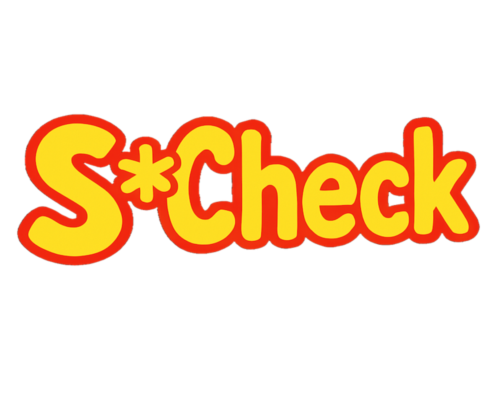

1.0
William Anstey

"Everyone wants to change the world,
but nobody wants to help mom with the dishes."
- Matthew Flatt, University of Utah
1 The Consequences of Milk
That “squeak” was the mouse asking for milk. Let’s suppose that you give him some in a big glass.
He’s a small mouse. The glass is too big—
2 Not the Last Straw
For now, to handle the milk moustache, it’s enough to give him a napkin. But it doesn’t end there... oh, no.